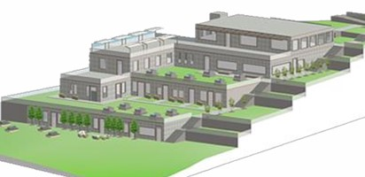
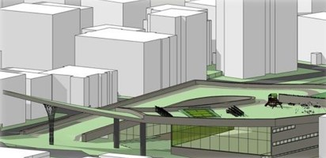
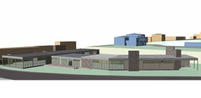

Located in the coastline of the of the Anatolian side of Istanbul, this social center provides its guests a safe and relaxing environment for a getaway from the chaos of the city.

Built in a crowded neighborhood in Istanbul, this sports complex creates the opportunity for locals to maintain a more social and active lifestyle.

Designed for the college students, this dormitory contains not only accommodation sites, but also lots of social and creative spaces.

Centered right beside Monumental Tomb of Hecatomnus, this museum provides its visitors the ability to experience centuries of history that went down in Muğla.

This museum was built from the remains of an old factory in Rome to reflect the historical, archeological, architectural and natural formations of the city.